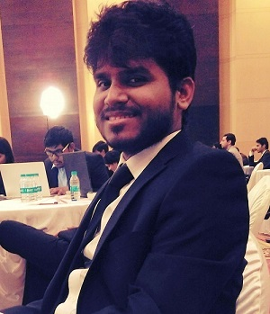

|  |
Rupesh GhadaiAssistant Manager at Leanbox Logistics Solutions Pvt Ltd (A Future Group Company) I describe myself a nerd who loves everything about books, data and technology! |
| Leanbox Logistics Solutions Pvt Ltd (A Future Group Enterprise) Assistant Manager (Projects, Products and Technology) July 2018- Present | Worked closely with the CEO and COO in central designing and solutioning team for various new projects Lead the project team for designing Last mile solution for a FMCG giant for Mumbai region Headed a project for establishing an entirely new warehouse; took ownership of the activities including warehouse layout designing, technology implementation, vendor management etc Collaborated with various stakeholders to ensure proper alignment on processes Worked on MySQL, R for Report Generation Process Hands on experience of handling large datasets Conceptualized and Created Incident Management System (IMS) and Human Resource Information System (HRIS) for internal use of employees in the organization Worked on adding new features in the Transaction Platform of the company Conceptualized and built wireframes, mockups, and workflows Built functional and technical specification documents Built product release/sprint plans and coordinated with the technology team to ensure timely delivery of new features Performed UAT to ensure smooth product releases |